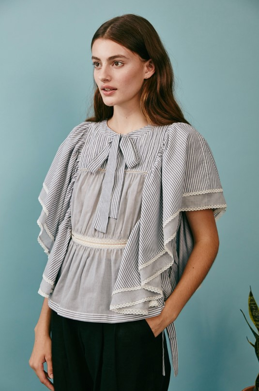
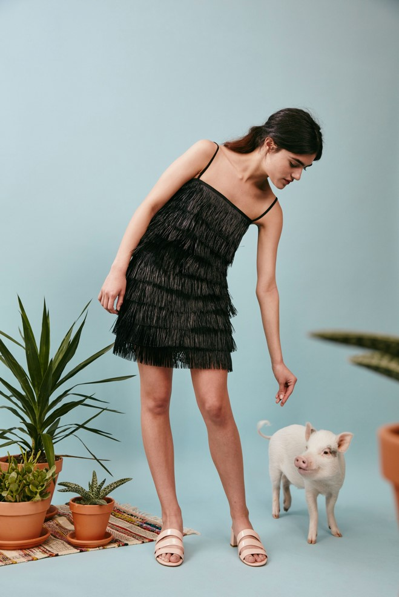

Contact
About
All Colections
ALL COLLECTIONS
Rachel Antonoff
| YEAR | COLLECTION |
|---|---|
| 2017 | Spring |
Theme
Pastel
Minimal
Patterns
Antonoff dreamt up a collection that celebrates femininity while still packing a punch.
This time around, her infamous reproductive-system sweater of Fall 2015 was reimagined as bold, rainbow-color embroidery on a tee and jean jacket. Elsewhere, a black and white print featured nude figures posing atop pigs.
PATTERNS
Cute grapichs and clever antics aside
Antonoff is expanding her range, making her bread and butter pieces more unfussy and wearable than ever before.There's a full slate of crisp, white pieces with ruffles and tiers that will have mass appeal
MINIMAL
Crisp, white pieces with ruffles
An army green boilersuit with a light sheen just might open Antonoff up a new demographic of shoppers. A point d´esprit black dress with a twee button and bow yoke proves that for all the sensibility this season, Antonoff's whimsy still abounds.
